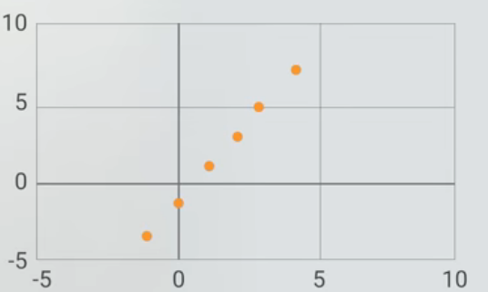
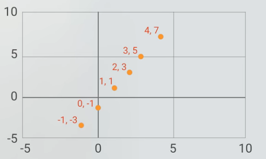

TensorFlow.js in your browser!
Let's create a model that fits the following dots in the graph and predicts it!


Value to be predicted
Training Epochs
Recommended 250 epochs at least!
Train and Predict